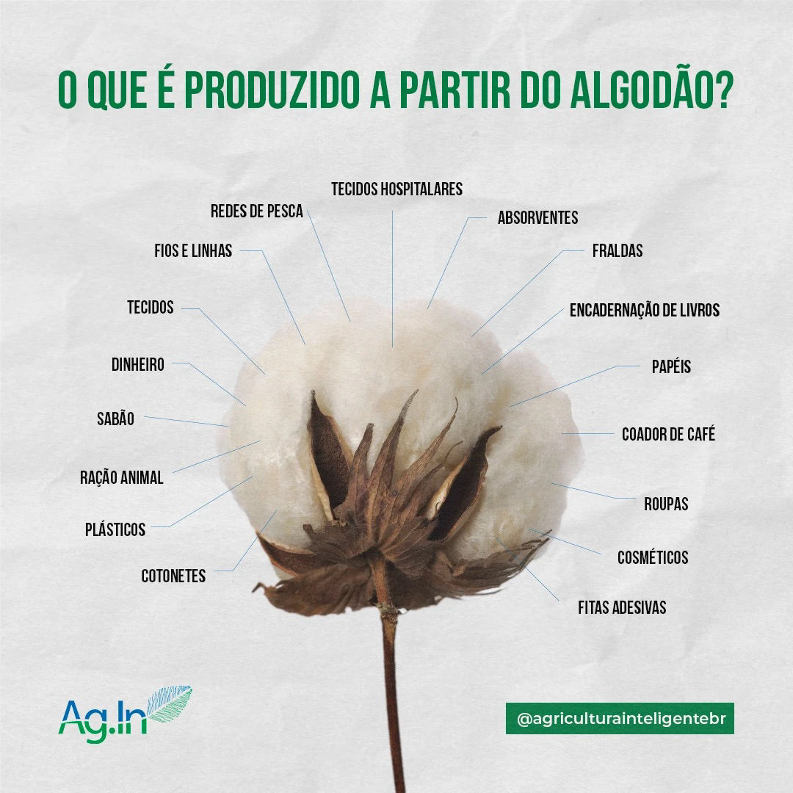
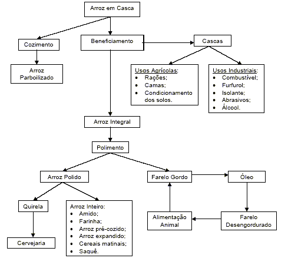
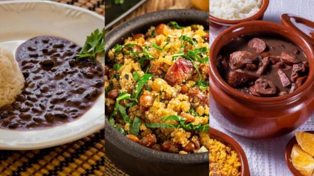
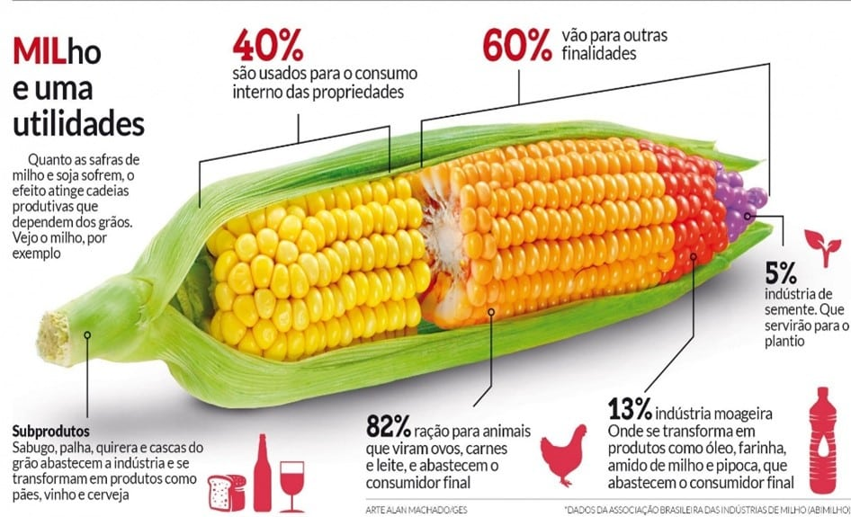
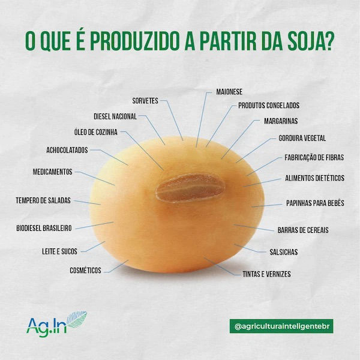
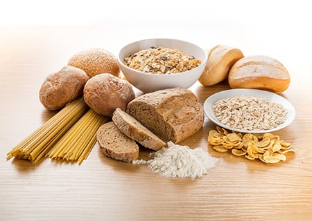

"... a cidade à transforma!"
A cidade recebe os produtos vindos do campo e posteriormente os transforma, sendo consumidos por
todas as pessoas, desde o campo à cidade.
Podemos citar como exemplos de principais matérias-primas que são transformadas:

ALGODÃO:
Seus principais derivados são:
- Tecidos.
- Telas para pintura.
- Filtros de café.
- Enchimentos.
- Dinheiro.

ARROZ:
Seus principais derivados são:
- Arroz branco, parboilizado e integral.
- Rações.
- Cereais.
- Combustíveis.
- Alimentação animal.

FEIJÃO:
Seus principais derivados são:
- Feijão em grão.
- Farinha.
- Feijão enlatado.
- Feijoadas enlatadas.
- Pão de feijão.

MILHO:
Seus principais derivados são:
- Farinha.
- Enlatados.
- In natura.
- Flocos.
- Ração animal.

SOJA:
Seus principais derivados são:
- óleo de soja.
- Carne de soja.
- Tofu.
- Farinhas.
- Ração animal.

TRIGO:
Seus principais derivados são:
- Farinha.
- Pão francês.
- Macarrão.
- Massas de pizzas, biscoitos, etc.
- Ração animal.